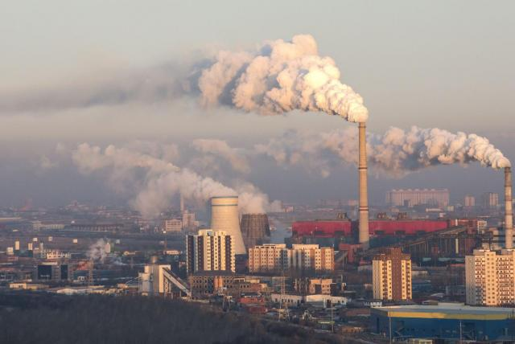
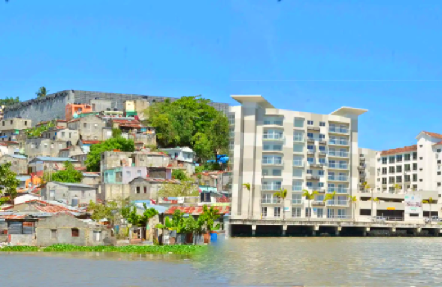

Industrias incipientes
La Revolución Industrial aún no había comenzado oficialmente, pero ya en el siglo XVI había un aumento en la actividad manufacturera y en la explotación de recursos naturales. La minería, especialmente de metales preciosos como el oro y la plata, se intensificó en este periodo. La minería no solo causaba la destrucción de grandes áreas de tierra, sino que también contaminaba los ríos y arroyos cercanos con metales pesados y otros desechos tóxicos. Este tipo de contaminación tenía efectos perjudiciales en la salud de las comunidades locales y en el medio ambiente en general.
Los problemas ambientales y sociales; pueden ser de manera global, local regional. Este fenómeno se origina principalmente por actividades industriales, agrícolas y urbanas, que liberan contaminantes en el aire, agua y suelo. Los contaminantes pueden ser químicos, como metales pesados y pesticidas; físicos, como el ruido y la radiación; o biológicos, como microorganismos patógenos. La complejidad de la contaminación ambiental, radica en la interacción entre estos contaminantes y los sistemas naturales, lo que puede llevar a la acumulación de toxinas y la alteración de ciclos biogeoquímicos esenciales.
Contaminacion en el siglo XVI en los Andes
La contaminación ambiental, como sabemos, es una problemática global que impacta gravemente todos los componentes de la biosfera. Se manifiesta de diversas formas, dependiendo de la fuente y tipo de contaminante.
¿Sabias que durante más de cuatro siglos la nieve y el hielo han conservado las pruebas que demuestran que el impacto causado por el hombre en la atmósfera era ya anterior al inicio de la Revolución Industrial , a mediados del siglo XIX.? Se trata de minúsculas partículas contaminantes procedentes de las minas de plata de Bolivia, cuya explotación intensiva impulsaron los conquistadores españoles desde el siglo XVI.
Las partículas halladas en el glaciar peruano también viajaron cientos de kilómetros (unos 800 km) pues, según exponen los investigadores en su estudio. En el siglo XVI, el imperio español obligó a las incas a trabajar en las minas de plata de Potosí. Aunque este avanzado pueblo ya sabía cómo llevar a cabo el refinado de la plata (para separarla de las impurezas).
Los españoles en 1572 los españoles introdujeron una nueva tecnología que impulsó la producción y envió espesas nubes de polvo de plomo sobre los Andes por primera vez en la historia. "Estas evidencia apoya la idea de que el impacto humano sobre el medio ambiente estaba muy extendido, incluso antes de la revolución industrial".
Tipos de Contaminación Ambiental y sus Orígenes
Cada tipo de contaminación presenta desafíos específicos que requieren soluciones técnicas y políticas adecuadas para mitigar sus efectos. La contaminación ambiental se clasifica en natural y antropogénica (originada por humanos). Pero para ser más específicos, hay tipos de contaminaciones que están afectando cada vez nuestro habitat, creando también problemas sociales en la actualidad.
" Selecciona una imagen para ver un video con una explicación mas detallada de cada tipo de contaminacion ambiental: "

Contaminación del agua

Contaminación del aire

Contaminación visual

Contaminación del suelo
¿Qué se debe hacer para evitar la contaminación ambiental?
En el caso del aire, se debe controlar la cantidad de humo que sueltan las industrias y los automóviles, disminuir al máximo el uso del automóvil y la motocicleta; preferir caminar, usar bicicleta o el transporte público.
- Reducción de Emisiones: Usar tecnologías limpias y renovables como la energía solar y eólica; promover el uso de vehículos eléctricos.
- Mejora de la Eficiencia Energética: Optimizar procesos industriales y residenciales para reducir el consumo de energía y las emisiones de gases de efecto invernadero.
- Control de Emisiones Industriales: Instalar filtros y sistemas de control de emisiones en fábricas y plantas de energía.
- Fomento del Transporte Público y No Motorizado: Promover el uso de transporte público, bicicletas y caminar para reducir la cantidad de vehículos en las calles.
En el caso del agua; El agua contaminada puede conllevar a la aparición de diversas enfermedades. Las acciones o situaciones que arruinan este líquido son debidos a factores humanos y entre ellas están:
- Derrames y filtraciones de combustibles.
- Plásticos procedentes de actividades humanas.
- Basura y aguas residuales sin depurar que llegan a los mares y ríos.
- El tráfico maritimo
En el caso del suelo, Los suelos contaminados incluyen agua contaminada y esto produce suelos infértiles, sequías, aguas no aptas para el uso y más problemas.
- Plantar plantas y árboles y todo de plantas es una de las mejores formas para evitar esta contaminación.
- Acordarse de las 3R de la ecología y utilizarlas. "Reducir, Reutilizar y Reciclar"
- Evitar ensuciar el agua de contenes y demás.
En el caso visual, Para lograr que la contaminación de tipo visual se vea reducida, es necesario regular la utilización de los elementos publicitarios, organizar el cableado eléctrico y también intentar concienciar a la población sobre este problema con el fin de generar un apoyo social.
La contaminación ambiental, un tema con compromiso social
En la actualidad una de las más grandes preocupaciones de la sociedad es el cuidado y preservación del medio ambiente, con el fin remediar los daños que el hombre ha causado y evitar que este se siga deteriorando, ya que esto directa e indirectamente afecta la salud y el bienestar de todo ser vivo.
La cantidad de contaminantes que aportamos van comprometiendo cada día la calidad ambiental de nuestro planeta, y la gran mayoría de ellos son de origen antropogénico. Estos contaminantes han sido la consecuencia del desarrollo de procesos de tipo industrial, agrícola, agropecuario, clínico, entre otros, sin una adecuada planeación y sin tener en cuenta los impactos ambientales.
Los problemas del siglo XXI son parte pre-industriales y otros de muy nueva creación. En el XIX ya aparecen referencias sobre la lluvia ácida, el efecto invernadero y el cambio climático o la deforestación a gran escala. Las nuevas formas de destrucción del medio aparecen a mediados del siglo XX, como la contaminación química, la destrucción de la capa de ozono y el efecto invernadero por otros gases distintos al CO2
La Contaminación Ambiental como Consecuencia de Problemas Sociales
- Crecimiento Poblacional y Urbanización:
El rápido crecimiento de la población y la urbanización han llevado a una mayor demanda de recursos naturales y energía. Las ciudades densamente pobladas tienden a generar más residuos y emisiones contaminantes debido a la concentración de actividades humanas e industriales. La falta de planificación urbana y de infraestructuras adecuadas puede agravar estos problemas, generando contaminación del aire, del agua y del suelo.
- Desigualdad Económica:
En muchas regiones, la desigualdad económica fuerza a las personas a vivir en áreas más contaminadas y menos saludables. Las comunidades de bajos ingresos a menudo tienen menos acceso a servicios de salud y a infraestructuras de saneamiento, lo que exacerba los efectos negativos de la contaminación en su salud y bienestar.
- Desarrollo Industrial:
La búsqueda de crecimiento económico a través del desarrollo industrial puede llevar a la explotación intensiva de recursos naturales y a la implementación de procesos industriales contaminantes sin las adecuadas medidas de control ambiental. Las políticas que priorizan el desarrollo económico sobre la protección ambiental pueden contribuir significativamente a la contaminación.
" Selecciona una imagen para ver un video con una explicación mas detallada de estas consecuencias de contaminación ambiental en los problemas sociales de hoy en dia: "

Crecimiento Poblacional

Desigualdad Económica

Desarrollo de industrias
La Contaminación Ambiental como Causa de Problemas Sociales
- Salud Pública:
La contaminación ambiental tiene impactos directos en la salud humana. La exposición a contaminantes del aire, como el dióxido de nitrógeno (NO2) y las partículas finas (PM2.5), puede causar enfermedades respiratorias y cardiovasculares. La contaminación del agua conlleva riesgos de enfermedades gastrointestinales y otras condiciones de salud
- Desplazamiento y Migración:
La degradación ambiental y los desastres relacionados con la contaminación pueden forzar a las comunidades a desplazarse. La pérdida de tierras agrícolas por la contaminación del suelo y el agua, así como los problemas de salud relacionados, pueden llevar a la migración rural-urbana o incluso internacional. Este desplazamiento puede generar tensiones sociales y conflictos por recursos en las áreas receptoras.
- Conflictos Sociales:
La competencia por recursos naturales escasos, como el agua limpia y la tierra fértil, puede generar conflictos sociales y políticos. La contaminación ambiental que reduce la disponibilidad de estos recursos puede agravar las tensiones existentes y contribuir a conflictos violentos. Además, la percepción de injusticia ambiental, donde ciertas comunidades sufren desproporcionadamente los efectos de la contaminación, puede llevar a protestas y movimientos sociales.
" Selecciona una imagen para ver un video con una explicación mas detallada de estas causas de contaminación ambiental en los problemas sociales de hoy en dia: "

Salud humana

Migración y desplazamiento de hogares

Problemas sociales de la C.A
Paises que más contaminan el ambiente
" Si quieres ver un video sobre la situación actual de ese país selecciona la imagén del país que desees saber más: "

CHINA
Según los autores del estudio, esta fue la primera vez en la historia en la que se consiguió fijar una cifra aproximada al volumen de estos vertidos. Sus resultados señalaron a China como el Estado responsable de arrojar más productos de plástico en los océanos, con un total de 8,8 millones de toneladas métricas.
Las fábricas y plantas de procesamiento a menudo vierten desechos tóxicos y químicos directamente en ríos y lagos. También el uso excesivo de fertilizantes y pesticidas en la agricultura contribuye a la contaminación de fuentes de agua.

Bangladesh
Bangladesh es el país con el aire más contaminado del mundo. La contaminación atmosférica roba una media de casi siete años de vida a los habitantes de este país asiático, según el informe anual de Políticas Energéticas de la Universidad de Chicago.
Palabras de la primera ministra de Bangladesh: Ya estamos observando y sintiendo los impactos del cambio climático. Está sucediendo en forma de ciclones severos, inundaciones, sequías e incendios que solo se volverán más extremos. La reducción de los contaminantes climáticos de vida corta con importantes potenciales de reducción del calentamiento global es fundamental para frenar la crisis climática. El CCAC tiene soluciones que los países pueden implementar hoy y objetivos NDC para lograr nuestros objetivos climáticos deseados.

INDIA, MUMBAI
Especialmente en sus ciudades densamente pobladas como Mumbai y Delhi. En estas metrópolis, la contaminación visual se manifiesta a través de una proliferación de anuncios publicitarios, vallas publicitarias y una mezcla caótica de infraestructura urbana que contribuye a una saturación visual abrumadora. La falta de regulación sobre la publicidad y la rápida urbanización han llevado a una sobrecarga sensorial que afecta tanto a la estética urbana como al bienestar de sus habitantes, creando un entorno en el que la información visual compite constantemente por la atención y contribuye a la sensación de desorden y estrés..
Enfrentando los Desafíos de la Contaminación Ambiental
Abordar los desafíos de la contaminación ambiental puede resultar complicado. Como se mencionó anteriormente en el blog sobre causas y efectos de la contaminación, esta genera una serie de problemas y preguntas adicionales, como "¿En qué estamos avanzando?" y "¿En qué estamos retrocediendo?" Estas interrogantes nos permiten analizar los desafíos desde una perspectiva más humana y consciente.
Los desafíos que plantea la contaminación ambiental son variados y complejos, derivados de múltiples fuentes que complican su control eficaz. La contaminación no conoce fronteras y afecta a los ecosistemas de manera interconectada, intensificando el cambio climático y provocando efectos transfronterizos. Enfrentar estos desafíos implica superar obstáculos tecnológicos y económicos, además de abordar las desigualdades sociales y ambientales que hacen que algunas comunidades sean más vulnerables a sus impactos. Se requiere un enfoque integral y colaborativo que involucre a gobiernos, empresas, comunidades y organizaciones internacionales para implementar soluciones efectivas y sostenibles en la lucha contra la contaminación ambiental.
Conclusión
Espero y te haya satisfacido y ayudo la información implementada en este blog. Para concluir; La relación entre la contaminación ambiental y los problemas sociales es bidireccional. La urbanización y la falta de infraestructura adecuada en el siglo XVI contribuyeron a la contaminación, mientras que la contaminación misma exacerbó las desigualdades y problemas de salud social. Para abordar estos desafíos de manera efectiva, es crucial entender y manejar esta interconexión, implementando políticas que no solo mitiguen la contaminación, sino que también promuevan la equidad social y el bienestar comunitario.